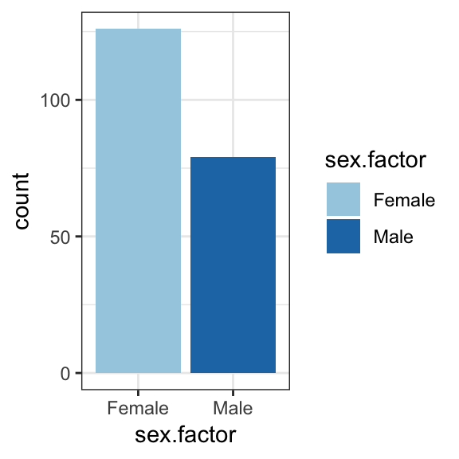
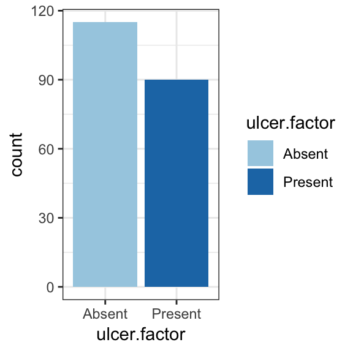
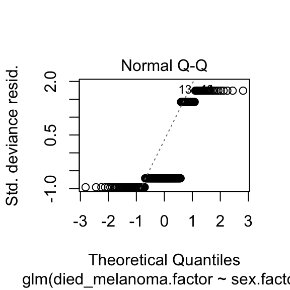
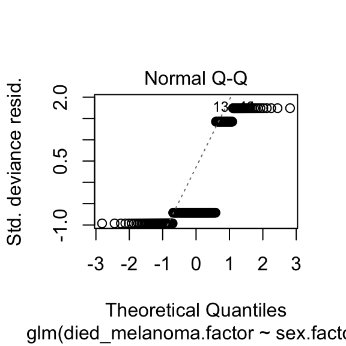

9.2 Odds and probabilities
Odds and probabilities can get confusing so let’s get them straight:

Odds and probabilities can always be interconverted. For example, if the odds of a patient dying from a disease are 9 to 1 then the probability of death (also known as risk) is 10%. Odds of 1 to 1 equal 50%.
\(Odds = \frac{p}{1-p}\), where \(p\) is the probability of the outcome occuring (or the circle being red).
Look at the numbers and convince yourself that this works.
9.2.1 Odds ratios
For a given categorical explanatory variable (e.g. gender), the likelihood of an outcome/dependent occuring (e.g cancer) can be expressed in a ratio of odds or odds ratio , e.g. the odds of men developing cancer is 2-times that of females, odds ratio = 2.0.

An alternative is a ratio of probabilites, called a risk ratio or relative risk. Odds ratios have useful mathematical characteristics and are the main expression of results in logistic regression analysis.
##Melanoma dataset
Malignant Melanoma is a cancer of the skin. It is agressive and highly invasive, making it difficult to treat.
It’s classically divided into 4 stages of severity, based upon the depth of the tumour:
- Stage I- <0.5 mm depth
- Stage II- 0.5 to 1.0 mm depth
- Stage III- 1.0 to 4.0 mm depth
- Stage IV- > 4.0 mm depth
This will be important in our analysis as we will creating a new variable based upon this.
Using logistic regression, we will investigate factors associated with death from malignant melanoma.
###Doing logistic regression in R
There are a few different ways of creating a logistic regression in R. The glm() function is probably the most common and most flexible one to use. (glm stands for generalised linear model.)
Within the glm() function there are several options in the function we must define to make R run a logistic regression.
data - you must define the dataframe to be used in the regression.
family - this tells R to treat the analysis as a logisitic regression. For our purposes, family will always be "binomial" (as binary data follow this distribution).
x ~ a + b + c - this is the formula for the logistic regression, with x being the outcome and a, b and c being predictor variables.
Note the outcome is separated from the rest of the formula and sits on the left hand side of a ~. The confounding variables are on the right side, separated by a + sign.
The final glm() function takes the following form:
glm(x ~ a + b + c + d, data = data, family = "binomial")
##Setting up your data
The most important step to ensure a good basis to start from is to ensure your variables are well structured and your outcome variable has exactly two outcomes.
We will need to make sure our outcome variables and predictor variables (the ones we want to adjust for) are suitably prepared.
In this example, the outcome variable called status.factor describes whether patients died or not and will be our (dependent) variable of interest.
###Worked Example
Here status.factor has three levels: Died, Died - other causes and Alive. This is not useful for us, as logistic regression requires outcomes to be binary.
We want to find out using logistic regression, which variables predict death from Melanoma. So we should create a new factor variable, died_melanoma.factor. This will have two outcomes, Yes (did die from melanoma) or No (did not die from melanoma).
mydata$status.factor %>%
fct_collapse("Yes" = c("Died"),
"No" = c("Alive", "Died - other causes")) ->
mydata$died_melanoma.factor
mydata$died_melanoma.factor %>% levels()## [1] "No" "Yes"##Creating categories
Now we have set up our outcome variable, we should ensure our predictor variables are prepared too.
Remember the stages of Melanoma? This is an important predictor of Melanoma Mortality based upon the scientific literature.
We should take this into account in our model.
###Exercise
After sorting out your outcome variable, create a new variable called stage.factor to encompass the stages of melanoma based upon the thickness. In this data, the thickness variable is measured in millimetres too.
#the cut() function makes a continuous variable into a categorical variable
mydata$thickness %>%
cut(breaks = c(0,0.5,1,4, max(mydata$thickness, na.rm=T)),
include.lowest = T) ->
mydata$stage.factor
mydata$stage.factor %>% levels()## [1] "[0,0.5]" "(0.5,1]" "(1,4]" "(4,17.4]"mydata$stage.factor %>%
fct_recode("Stage I" = "[0,0.5]",
"Stage II" = "(0.5,1]",
"Stage III" = "(1,4]",
"Stage IV" = "(4,17.4]"
) -> mydata$stage.factor
mydata$stage.factor %>% levels()## [1] "Stage I" "Stage II" "Stage III" "Stage IV"9.2.2 Always plot your data first!
source("1_source_theme.R")
mydata %>%
ggplot(aes(x = sex.factor)) +
geom_bar(aes(fill = sex.factor))

## `stat_bin()` using `bins = 30`. Pick better value with `binwidth`.Now we are ready for some modelling!
##Basic: One explanatory variable (predictor)
Lets find out what the influence of each predictor/confounding variable is on mortality from melanoma, which may help inform a more complicated regression, with multiple predictors/confounders.
We’ll start with whether the patient was male or female
###Worked example
First we need to create a regression model, using glm(), we will then summarise it using summary()
Note, we need to use the family option. Specifying 'binomial' in family tells glm to switch to logistic regression.
##
## Call: glm(formula = died_melanoma.factor ~ sex.factor, family = "binomial",
## data = mydata)
##
## Coefficients:
## (Intercept) sex.factorMale
## -1.253 0.708
##
## Degrees of Freedom: 204 Total (i.e. Null); 203 Residual
## Null Deviance: 242.4
## Residual Deviance: 237.4 AIC: 241.4##
## Call:
## glm(formula = died_melanoma.factor ~ sex.factor, family = "binomial",
## data = mydata)
##
## Deviance Residuals:
## Min 1Q Median 3Q Max
## -0.9565 -0.7090 -0.7090 1.4157 1.7344
##
## Coefficients:
## Estimate Std. Error z value Pr(>|z|)
## (Intercept) -1.2528 0.2143 -5.846 5.03e-09 ***
## sex.factorMale 0.7080 0.3169 2.235 0.0254 *
## ---
## Signif. codes: 0 '***' 0.001 '**' 0.01 '*' 0.05 '.' 0.1 ' ' 1
##
## (Dispersion parameter for binomial family taken to be 1)
##
## Null deviance: 242.35 on 204 degrees of freedom
## Residual deviance: 237.35 on 203 degrees of freedom
## AIC: 241.35
##
## Number of Fisher Scoring iterations: 4Now we have created the model- fantastic!
But this doesn’t mean a lot to humans reading a paper- or us in fact.
The estimate output of summary(model_1) represents the logarithm of the odds ratio. The odds ratio would be a lot easier to understand.
Therefore, to sort that out we should exponentiate the output of the model! The exp() function will do this.
## (Intercept) sex.factorMale
## 0.2857143 2.0300000This gives us an odds ratio of 2.03 for males. That is to say, males are twice as likely to die from melanoma than females.
Now a confidence interval might be handy. As this will be the logarithm of the confidence interval, we should exponentiate it to make it understandable.
## Waiting for profiling to be done...## 2.5 % 97.5 %
## (Intercept) 0.1843592 0.4284939
## sex.factorMale 1.0914854 3.7938450The 2.5% is the lower bound and the 97.5% is the upper bound of the 95% confidence interval.
So we can therefore say that being male doubles your chances of dying from melanoma with an Odds Ratio of 2.03 (95% confidence interval of 1.09 to 3.79)
###Exercise
Repeat this for all the variables contained within the data, particulary:
stage.factor, age, ulcer.factor, thickness and age.factor.
Write their odds ratios and 95% confidence intervals down for the next section!
Congratulations on building your first regression model in R!
##Summarizer package
We have developed our summarizer package to help with advanced regression modelling. We will introduce it here, but not go into detail.
Most packages can be installed with just install.packages("package-name"), e.g. install.packages("survival").
Summarizer is still in development and can be installed with install.packages("devtools") followed by devtools::install_github("ewenharrison/summarizer"). See https://github.com/ewenharrison/summarizer for more information and updates.
##Summarise a list of variables by another variable
We can use the summarizer package to summarise a list of variables by another variable. This is very useful for “Table 1” in many studies.
## Loading required package: Hmisc## Loading required package: lattice## Loading required package: survival## Loading required package: Formula##
## Attaching package: 'Hmisc'## The following objects are masked from 'package:dplyr':
##
## src, summarize## The following objects are masked from 'package:base':
##
## format.pval, unitsdependent="died_melanoma.factor"
explanatory = c("age", "sex.factor")
mydata %>%
summary.factorlist(dependent, explanatory, p = TRUE) -> table_result| label | levels | No | Yes | pvalue |
|---|---|---|---|---|
| age | Mean (SD) | 51.5 (16.1) | 55.1 (17.9) | 0.189 |
| sex.factor | Female | 98 (77.8) | 28 (22.2) | 0.024 |
| Male | 50 (63.3) | 29 (36.7) |
##summarizer function for logistic regression
We can then use the summarizer function to run a logistic regression analysis with similar syntax.
dependent="died_melanoma.factor"
explanatory = c("sex.factor")
mydata %>%
summarizer(dependent, explanatory) -> model2| label | levels | No | Yes | OR (univariable) | OR (multivariable) |
|---|---|---|---|---|---|
| sex.factor | Female | 98 (66.2) | 28 (49.1) | - | - |
| Male | 50 (33.8) | 29 (50.9) | 2.03 (1.09-3.79, p=0.025) | 2.03 (1.09-3.79, p=0.025) |
##Adjusting for multiple variables in R
Your first models only included one variable. It’s time to scale them up.
Multivariable models take multiple variables and estimates how each variable predicts an event. It adjusts for the effects of each one, so you end up with a model that calculates the adjusted effect estimate (i.e. the odds ratio), upon an outcome.
When you see the term ‘adjusted’ in scientific papers, this is what it means.
###Worked Example
Lets adjust for age (as a continuous variable), sex.factor and stage.factor. Then output them as odds ratios.
dependent="died_melanoma.factor"
explanatory = c("age", "sex.factor", "stage.factor")
mydata %>%
summarizer(dependent, explanatory) -> model3| label | levels | No | Yes | OR (univariable) | OR (multivariable) |
|---|---|---|---|---|---|
| age | Mean (SD) | 51.5 (16.1) | 55.1 (17.9) | 1.01 (0.99-1.03, p=0.163) | 1.01 (0.99-1.03, p=0.534) |
| sex.factor | Female | 98 (66.2) | 28 (49.1) | - | - |
| Male | 50 (33.8) | 29 (50.9) | 2.03 (1.09-3.79, p=0.025) | 1.62 (0.81-3.21, p=0.167) | |
| stage.factor | Stage I | 18 (12.2) | 1 (1.8) | - | - |
| Stage II | 32 (21.6) | 5 (8.8) | 2.81 (0.41-56.12, p=0.362) | 2.83 (0.40-56.96, p=0.363) | |
| Stage III | 75 (50.7) | 29 (50.9) | 6.96 (1.34-128.04, p=0.065) | 7.17 (1.37-132.38, p=0.061) | |
| Stage IV | 23 (15.5) | 22 (38.6) | 17.22 (3.13-322.85, p=0.008) | 14.30 (2.54-270.31, p=0.014) |
## Loading required package: scales##
## Attaching package: 'scales'## The following object is masked from 'package:purrr':
##
## discard## The following object is masked from 'package:readr':
##
## col_factor## Waiting for profiling to be done...
## Waiting for profiling to be done...## Warning: Removed 2 rows containing missing values (geom_errorbarh).
Note- when we enter age into regression models, the effect estimate is provided in terms of per unit increase. So in this case it’s expressed in terms of an odds ratio per year increase (i.e. for every year in age gained odds of death increases by 1.02).
###Exercise
Now you try making a regression that includes ulcer.factor.
##Advanced: Fitting the best model
Now we have our preliminary model. We could leave it there.
However, when you publish research, you are often asked to supply a measure of how well the model fitted the data.
There are different approaches to model fitting. Come to our course HealthyR-Advanced: Practical Logistic Regression. At this we describe use of the Akaike Information Criterion (AIC) and the C-statistic.
The C-statistic describes discrimination and anything over 0.60 is considered good. The closer to 1.00 the C-statistic is, the better the fit.
The AIC measure model fit with lower values indicating better fit.
These metrics are available here:
## Waiting for profiling to be done...
## Waiting for profiling to be done...
## Waiting for profiling to be done...
## Waiting for profiling to be done...## [[1]]
## label levels No Yes
## 1 age Mean (SD) 51.5 (16.1) 55.1 (17.9)
## 2 sex.factor Female 98 (66.2) 28 (49.1)
## 3 Male 50 (33.8) 29 (50.9)
## 4 stage.factor Stage I 18 (12.2) 1 (1.8)
## 5 Stage II 32 (21.6) 5 (8.8)
## 6 Stage III 75 (50.7) 29 (50.9)
## 7 Stage IV 23 (15.5) 22 (38.6)
## OR (univariable) OR (multivariable)
## 1 1.01 (0.99-1.03, p=0.163) 1.01 (0.99-1.03, p=0.534)
## 2 - -
## 3 2.03 (1.09-3.79, p=0.025) 1.62 (0.81-3.21, p=0.167)
## 4 - -
## 5 2.81 (0.41-56.12, p=0.362) 2.83 (0.40-56.96, p=0.363)
## 6 6.96 (1.34-128.04, p=0.065) 7.17 (1.37-132.38, p=0.061)
## 7 17.22 (3.13-322.85, p=0.008) 14.30 (2.54-270.31, p=0.014)
##
## [[2]]
## [1] "Number in dataframe = 205, Number in model = 205, Missing = 0, AIC = 232.3, C-statistic = 0.708"###Extra material: Diagnostics plots
While outwith the objectives of this course, diagnostic plots for glm models can be produced by:
 
